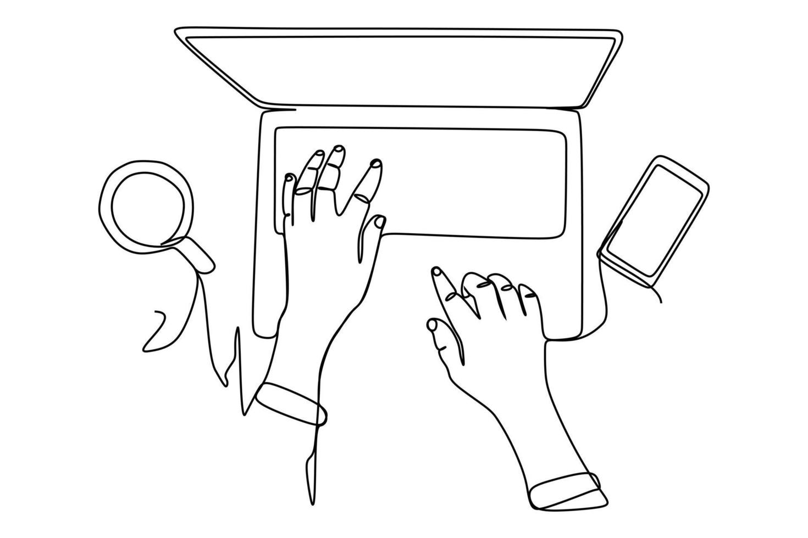

Bienvenue à la Maison des savoirs est un centre de formation dédié à l'apprentissage, à l'innovation et au développement personnel et professionnel. Situé en Tunisie, notre centre offre un environnement stimulant où les apprenants de tous horizons peuvent acquérir des compétences solides et actualisées, adaptées aux besoins du marché.
Nous proposons une variété de formations dans des domaines clés tels que l'informatique, le développement personnel, ainsi que des programmes certifiants pour accompagner votre évolution de carrière.
Chez Maison des savoirs, notre mission est de rendre le savoir accessible à tous, à travers des méthodes pédagogiques modernes, un accompagnement personnalisé et des formateurs qualifiés. Nous croyons que chaque individu a le potentiel de réussir lorsqu'il est bien encadré.
Rejoignez-nous pour construire ensemble un avenir fondé sur le savoir, les compétences et la confiance en soi.